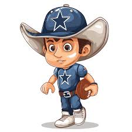

America's Team
The Dallas Cowboys were founded in 1960 and quickly rose to prominence as one of the most popular and successful franchises in NFL history. With five Super Bowl victories and numerous playoff appearances, the Cowboys have become known as "America's Team."

The Cowboys continue to strive for greatness, playing in the state-of-the-art AT&T Stadium and maintaining a devoted fanbase across the world.